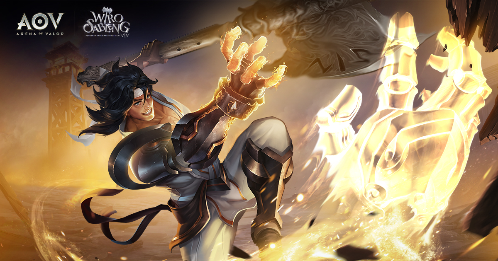

|

|
Hi Challengers,
Kejutan baru kembali dipersembahkan untuk para Challengers di seluruh Indonesia. Kali ini, Garena AOV Indonesia bekerjasama dengan Lifelike Pictures untuk menambah keseruan permainan Arena of Valor dengan menghadirkan Hero Wiro Sableng.
Hero ini merupakan hero lokal Indonesia pertama yang akan hadir di dalam game AOV dan bisa dimainkan oleh semua pemain AOV pada bulan Agustus 2018 mendatang.
Karakter Wiro Sableng adalah tokoh fiksi dari serial novel karya Bastian Tito yang mengisahkan petualangan pendekar bersenjata Kapak Maut Naga Geni 212.
Serial ini telah diadaptasi dalam sinetron Indonesia dari tahun 1994 hingga 2002 dan juga diangkat menjadi film pada tahun 1988 dan 1989.
Kemunculan Wiro Sableng di layar kaca inilah yang membuat karakter ini dikenal luas oleh masyarakat Indonesia. Lifelike Pictures, bekerja sama dengan 20th Century Fox, kemudian mengangkat kembali kisah karakter ini
di film layar lebar dengan judul Wiro Sableng 212.
Proyek kolaborasi perdana antara rumah produksi Hollywood dan rumah produksi lokal di Asia Tenggara ini akan tayang di seluruh bioskop tanah air mulai tanggal 30 Agustus.
Hadirnya hero Wiro Sableng di AOV pada bulan Agustus mendatang merupakan proyek kolaborasi kerjasama antara Lifelike Pictures, Caravan Studio, Tencent Timi Studio, Garena Indonesia dan pihak-pihak lainnya selama berbulan-bulan.
Vino G Bastian, pemeran utama dari film Wiro Sableng 212, juga ikut berpartisipasi dalam pembuatan Hero Wiro Sableng.
Akhirnya, keinginan pemain AOV akan hero lokal terwujudkan melalui kerjasama ini.
|